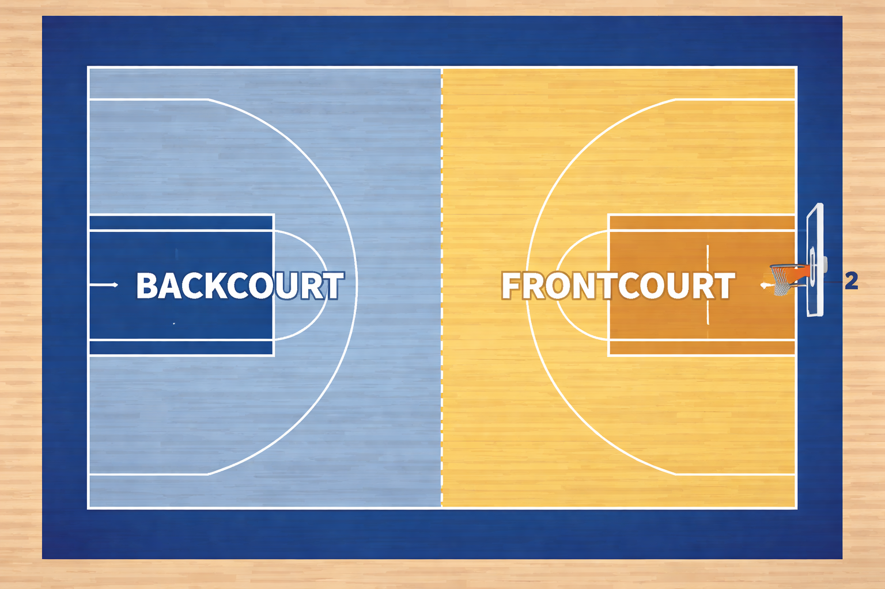
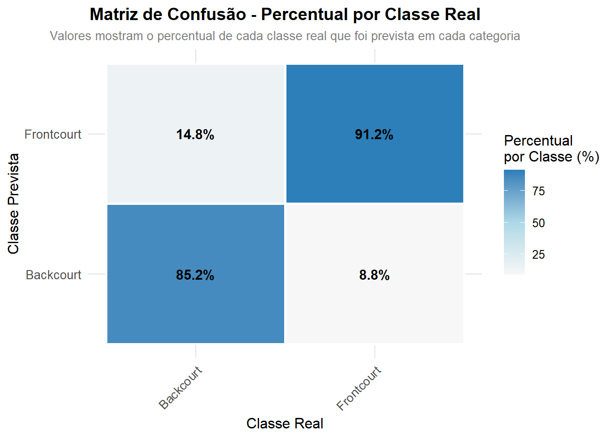
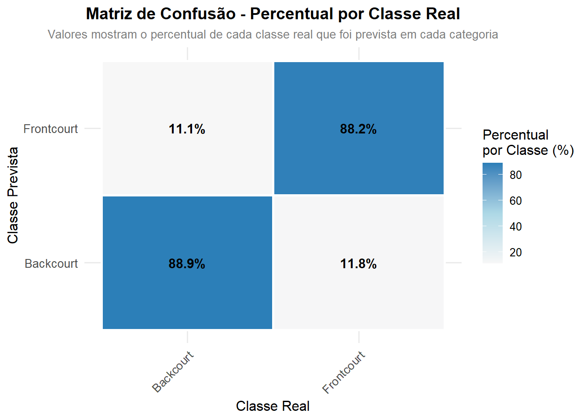

Mostrar código
dados_analise <- dados_analise %>%
mutate(
Court = factor(case_when(
Position %in% c("PG", "SG") ~ "Backcourt",
Position %in% c("SF", "PF", "C") ~ "Frontcourt",
)
)) |>
dplyr::select(-Position)No contexto deste estudo, os jogadores são classificados de acordo com sua função predominante em quadra:
Backcourt: jogadores com maior responsabilidade na condução de bola, criação ofensiva e organização do jogo, tipicamente associados às posições de armador (PG) e ala-armador (SG).
Frontcourt: jogadores com atuação predominante próxima à cesta, maior presença física e participação em ações como rebotes e proteção de aro, geralmente associados às posições de ala (SF), ala-pivô (PF) e pivô (C).

A variável resposta foi construída a partir da posição original do jogador, utilizando a seguinte regra de mapeamento:
Essa transformação permite reestruturar o problema de classificação em um cenário binário, mantendo coerência com o papel desempenhado pelos atletas em quadra.
Utilizando os mesmos feature engineering do primeiro modelo
dados_analise_rec <- recipe(Court ~ ., data = train_data) |>
step_mutate(
AST_TOV_RATIO = AST / (TOV + 0.1),
REB_HEIGHT_INTER = REB * Altura,
PLAYMAKER_SCORE = AST - TOV,
RIM_PROTECT = REB + BLK,
PTS_EFF = PTS * FG_PCT) |>
step_YeoJohnson(all_numeric_predictors()) |> # Transformação Yeo-Johnson
step_normalize(all_numeric_predictors()) |> # normaliza variáveis numéricas para terem média 0 e variância 1
step_corr(all_numeric_predictors(), threshold = 0.8,
method = "spearman"
) # remove preditores que tenham alta correlação com algum outro preditorn= 422
node), split, n, loss, yval, (yprob)
* denotes terminal node
1) root 422 187 Frontcourt (0.44312796 0.55687204)
2) Altura< -0.1890285 187 21 Backcourt (0.88770053 0.11229947)
4) Peso< 0.0192133 157 8 Backcourt (0.94904459 0.05095541) *
5) Peso>=0.0192133 30 13 Backcourt (0.56666667 0.43333333)
10) AST>=0.1657959 11 0 Backcourt (1.00000000 0.00000000) *
11) AST< 0.1657959 19 6 Frontcourt (0.31578947 0.68421053) *
3) Altura>=-0.1890285 235 21 Frontcourt (0.08936170 0.91063830)
6) Peso< -0.2531726 37 15 Frontcourt (0.40540541 0.59459459)
12) OREB< -0.3155259 16 6 Backcourt (0.62500000 0.37500000) *
13) OREB>=-0.3155259 21 5 Frontcourt (0.23809524 0.76190476) *
7) Peso>=-0.2531726 198 6 Frontcourt (0.03030303 0.96969697) *# Criar uma função reutilizável
plot_confusion_matrix_percent <- function(model, new_data, truth_col, pred_col) {
# Calcular matriz de confusão
cm <- model %>%
augment(new_data = new_data) %>%
conf_mat(truth = {{ truth_col }}, estimate = {{ pred_col }})
# Preparar dados para o heatmap (percentual por linha - recomendado)
total_obs <- sum(cm$table)
cm_plot_data <- cm$table %>%
as.data.frame() %>%
rename(Prediction = Prediction, Truth = Truth, Count = Freq) %>%
group_by(Truth) %>%
mutate(
percent = (Count / sum(Count)) * 100,
label = sprintf("%.1f%%", percent)
) %>%
ungroup()
# Criar o gráfico
p <- ggplot(cm_plot_data, aes(x = Truth, y = Prediction, fill = percent)) +
geom_tile(color = "white", size = 1) +
geom_text(aes(label = label), size = 4, color = "black", fontface = "bold") +
scale_fill_gradient2(
low = "#f7f7f7",
mid = "#add8e6",
high = "#2c7fb8",
midpoint = 50,
name = "Percentual\npor Classe (%)"
) +
labs(
title = "Matriz de Confusão - Percentual por Classe Real",
subtitle = "Valores mostram o percentual de cada classe real que foi prevista em cada categoria",
x = "Classe Real",
y = "Classe Prevista"
) +
theme_minimal(base_size = 12) +
theme(
axis.text.x = element_text(angle = 45, hjust = 1, size = 10),
axis.text.y = element_text(size = 10),
plot.title = element_text(hjust = 0.5, face = "bold", size = 14),
plot.subtitle = element_text(hjust = 0.5, size = 10, color = "gray50"),
legend.position = "right"
)
return(p)
}
# Usar a função
plot_confusion_matrix_percent(
model = fit_dtree,
new_data = test_data,
truth_col = Court,
pred_col = .pred_class
)
metricas<- metric_set(accuracy, sens, recall, spec, precision, ppv, npv)
bind_rows(
fit_dtree %>%
augment(new_data = train_data) %>%
mutate(dataset = "Treino"),
fit_dtree %>%
augment(new_data = test_data) %>%
mutate(dataset = "Teste")
) %>%
group_by(dataset) %>%
metricas(truth = Court, estimate = .pred_class) %>%
dplyr::select(dataset, .metric, .estimate) %>%
pivot_wider(names_from = .metric, values_from = .estimate) %>%
mutate(across(-dataset, round, 3)) %>%
gt()| dataset | accuracy | sens | recall | spec | precision | ppv | npv |
|---|---|---|---|---|---|---|---|
| Teste | 0.885 | 0.852 | 0.852 | 0.912 | 0.885 | 0.885 | 0.886 |
| Treino | 0.927 | 0.909 | 0.909 | 0.940 | 0.924 | 0.924 | 0.929 |
Utilizando o método k-fold cross validation para construir um conjunto de validação com k-folds. Considerando k = 10.
dtreep_spec <- decision_tree(cost_complexity = tune()) %>% # Decision tree
set_engine(engine = "rpart") %>%
set_mode("classification")
wf_dtreep <- workflow() %>%
add_recipe(dados_analise_rec) %>%
add_model(dtreep_spec)
ctrl <- control_grid(save_pred = TRUE)
my_metrics<- metric_set(accuracy, sens, spec, precision)
dtreep_res <- wf_dtreep %>%
tune_grid(
resamples = cv_folds,
grid = 10,
control = ctrl,
metrics = my_metrics
)
best_dtreep_res <- dtreep_res %>%
select_best(metric = "accuracy")
best_dtreep_res# A tibble: 1 × 2
cost_complexity .config
<dbl> <chr>
1 0.0893 pre0_mod10_post0n= 422
node), split, n, loss, yval, (yprob)
* denotes terminal node
1) root 422 187 Frontcourt (0.4431280 0.5568720)
2) Altura< -0.1890285 187 21 Backcourt (0.8877005 0.1122995) *
3) Altura>=-0.1890285 235 21 Frontcourt (0.0893617 0.9106383) *# Criar uma função reutilizável
plot_confusion_matrix_percent <- function(model, new_data, truth_col, pred_col) {
# Calcular matriz de confusão
cm <- model %>%
augment(new_data = new_data) %>%
conf_mat(truth = {{ truth_col }}, estimate = {{ pred_col }})
# Preparar dados para o heatmap (percentual por linha - recomendado)
total_obs <- sum(cm$table)
cm_plot_data <- cm$table %>%
as.data.frame() %>%
rename(Prediction = Prediction, Truth = Truth, Count = Freq) %>%
group_by(Truth) %>%
mutate(
percent = (Count / sum(Count)) * 100,
label = sprintf("%.1f%%", percent)
) %>%
ungroup()
# Criar o gráfico
p <- ggplot(cm_plot_data, aes(x = Truth, y = Prediction, fill = percent)) +
geom_tile(color = "white", size = 1) +
geom_text(aes(label = label), size = 4, color = "black", fontface = "bold") +
scale_fill_gradient2(
low = "#f7f7f7",
mid = "#add8e6",
high = "#2c7fb8",
midpoint = 50,
name = "Percentual\npor Classe (%)"
) +
labs(
title = "Matriz de Confusão - Percentual por Classe Real",
subtitle = "Valores mostram o percentual de cada classe real que foi prevista em cada categoria",
x = "Classe Real",
y = "Classe Prevista"
) +
theme_minimal(base_size = 12) +
theme(
axis.text.x = element_text(angle = 45, hjust = 1, size = 10),
axis.text.y = element_text(size = 10),
plot.title = element_text(hjust = 0.5, face = "bold", size = 14),
plot.subtitle = element_text(hjust = 0.5, size = 10, color = "gray50"),
legend.position = "right"
)
return(p)
}
# Usar a função
plot_confusion_matrix_percent(
model = fit_dtreep,
new_data = test_data,
truth_col = Court,
pred_col = .pred_class
)
metricas<- metric_set(accuracy, sens, recall, spec, precision, ppv, npv)
bind_rows(
fit_dtreep %>%
augment(new_data = train_data) %>%
mutate(dataset = "Treino"),
fit_dtreep %>%
augment(new_data = test_data) %>%
mutate(dataset = "Teste")
) %>%
group_by(dataset) %>%
metricas(truth = Court, estimate = .pred_class) %>%
dplyr::select(dataset, .metric, .estimate) %>%
pivot_wider(names_from = .metric, values_from = .estimate) %>%
mutate(across(-dataset, round, 3)) %>%
gt()| dataset | accuracy | sens | recall | spec | precision | ppv | npv |
|---|---|---|---|---|---|---|---|
| Teste | 0.885 | 0.889 | 0.889 | 0.882 | 0.857 | 0.857 | 0.909 |
| Treino | 0.900 | 0.888 | 0.888 | 0.911 | 0.888 | 0.888 | 0.911 |
knn_spec <- nearest_neighbor(neighbors = tune()) %>% # K-NN
set_engine("kknn")%>%
set_mode("classification")
nbayes_spec <- naive_Bayes() %>% # Naive Bayes
set_engine("naivebayes") %>%
set_mode("classification")
logistic_spec <- logistic_reg() %>% # RL
set_engine(engine = "glm") %>%
set_mode("classification")
lda_spec <- discrim_linear() %>% # Linear discriminant analysis
set_engine("MASS") %>%
set_mode("classification")
qda_spec <- discrim_quad() %>% # Quadratic discriminant analysis
set_engine("MASS") %>%
set_mode("classification")
dt_spec <- decision_tree(cost_complexity = tune(),
min_n = tune(),
tree_depth = tune()) %>% # Decision tree
set_engine(engine = "rpart") %>%
set_mode("classification")
bt_spec <- bag_tree(cost_complexity = tune(),
min_n = tune(),
tree_depth = tune()) %>% # Bagged trees
set_engine("rpart") %>%
set_mode("classification")
rf_spec <- rand_forest(mtry = tune(),
min_n = tune(),
trees = tune()) %>% # Random forest
set_engine(engine = "ranger") %>%
set_mode("classification")
xgb_spec <- boost_tree(tree_depth = tune(),
learn_rate = tune(),
loss_reduction = tune(),
min_n = tune(),
sample_size = tune(),
trees = tune(),
mtry = tune()) %>% # Boosted trees
set_engine(engine = "xgboost") %>%
set_mode("classification")
lsvm_spec <- svm_linear(cost = tune(),
margin = tune()) %>% # Linear SVM
set_engine(engine = "kernlab") %>%
set_mode("classification")
rsvm_spec <- svm_rbf(cost = tune(),
rbf_sigma = tune(),
margin = tune()) %>% # RBF/Gaussian kernel SVM
set_engine(engine = "kernlab") %>%
set_mode("classification")
psvm_spec <- svm_poly(cost = tune(),
degree = tune(),
scale_factor = tune(),
margin = tune()) %>% # Polynomial kernel SVM
set_engine("kernlab") %>%
set_mode("classification")
nn_spec <- mlp(
hidden_units = tune(),
penalty = tune(),
epochs = tune()
) %>%
set_engine("nnet") %>% # Multilayer perceptron
set_mode("classification")wf = workflow_set(
preproc = list(dados_analise_rec),
models = list(
knn_fit = knn_spec,
nbayes_fit = nbayes_spec,
linear_fit = logistic_spec,
lda_fit = lda_spec,
qda_fit = qda_spec,
dt_fit = dt_spec,
bt_fit = bt_spec,
rf_fit = rf_spec,
xgb_fit = xgb_spec,
lsvm_fit = lsvm_spec,
rsvm_fit = rsvm_spec,
psvm_fit = psvm_spec,
nn_fit =nn_spec
)
) %>%
mutate(wflow_id = gsub("(recipe_)", "", wflow_id))maximum number of iterations reached 1.157675e-05 -1.157675e-05maximum number of iterations reached 0.009441812 -0.009219913maximum number of iterations reached 0.0002380996 -0.0002380978maximum number of iterations reached 1.533007e-05 -1.533006e-05maximum number of iterations reached 1.209198e-05 -1.209197e-05maximum number of iterations reached 0.008587101 -0.008468902maximum number of iterations reached 0.0003142291 -0.000314226maximum number of iterations reached 1.548313e-05 -1.548313e-05maximum number of iterations reached 1.206747e-05 -1.206746e-05maximum number of iterations reached 0.008393851 -0.008277877maximum number of iterations reached 0.0003143636 -0.0003143605maximum number of iterations reached 1.562169e-05 -1.562168e-05maximum number of iterations reached 1.219812e-05 -1.219812e-05maximum number of iterations reached 0.00802252 -0.0078974maximum number of iterations reached 0.0003219037 -0.0003219004maximum number of iterations reached 1.593925e-05 -1.593924e-05maximum number of iterations reached 1.243672e-05 -1.243672e-05maximum number of iterations reached 0.00848304 -0.00837638maximum number of iterations reached 0.0003274124 -0.0003274094maximum number of iterations reached 1.600723e-05 -1.600722e-05maximum number of iterations reached 1.250974e-05 -1.250974e-05maximum number of iterations reached 0.008269689 -0.008186998maximum number of iterations reached 0.0003291846 -0.0003291814maximum number of iterations reached 1.6042e-05 -1.604199e-05maximum number of iterations reached 1.244477e-05 -1.244477e-05maximum number of iterations reached 0.007789947 -0.007695312maximum number of iterations reached 0.0003261977 -0.0003261945maximum number of iterations reached 1.592311e-05 -1.592311e-05maximum number of iterations reached 1.223111e-05 -1.223111e-05maximum number of iterations reached 0.007622686 -0.0075075maximum number of iterations reached 0.0003245414 -0.0003245382maximum number of iterations reached 1.633017e-05 -1.633016e-05maximum number of iterations reached 1.259551e-05 -1.25955e-05maximum number of iterations reached 0.009152722 -0.009000054maximum number of iterations reached 0.0003332692 -0.000333266maximum number of iterations reached 1.606285e-05 -1.606285e-05maximum number of iterations reached 1.266873e-05 -1.266872e-05maximum number of iterations reached 0.008226421 -0.008114257maximum number of iterations reached 0.0003280093 -0.0003280059maximum number of iterations reached 0.00803906 -0.008025783maximum number of iterations reached 0.01473698 -0.01435861maximum number of iterations reached 0.01428411 -0.0139594maximum number of iterations reached 0.01011962 -0.01008661maximum number of iterations reached 0.01386665 -0.01350262maximum number of iterations reached 0.01465494 -0.01427826maximum number of iterations reached 0.01010594 -0.01007303maximum number of iterations reached 0.01421127 -0.01387657maximum number of iterations reached 0.01402073 -0.01367821maximum number of iterations reached 0.01031238 -0.01027823maximum number of iterations reached 0.01420289 -0.01382495maximum number of iterations reached 0.01468844 -0.01433116maximum number of iterations reached 0.0103545 -0.01032001maximum number of iterations reached 0.01428657 -0.01393209maximum number of iterations reached 0.01459501 -0.01421477maximum number of iterations reached 0.01041917 -0.01038289maximum number of iterations reached 0.01428731 -0.01391695maximum number of iterations reached 0.01433138 -0.0139682maximum number of iterations reached 0.01028546 -0.01025091maximum number of iterations reached 0.01443254 -0.01408568maximum number of iterations reached 0.01442959 -0.01407743maximum number of iterations reached 0.01039522 -0.01035977maximum number of iterations reached 0.01427804 -0.01387191maximum number of iterations reached 0.01396524 -0.0136058maximum number of iterations reached 0.01060273 -0.01056408maximum number of iterations reached 0.0145134 -0.01408277maximum number of iterations reached 0.01468906 -0.01425979maximum number of iterations reached 0.01053923 -0.01050104maximum number of iterations reached 0.01423523 -0.01385083maximum number of iterations reached 0.01453623 -0.01416353Usando a acurácia no conjunto de validão de acordo com o melhor conjunto de hiperparâmetros obtido para cada modelo.
Ordenando pelos melhores
Utilizando outras métricas para avaliar
Ordenando os modelos pela métrica de acurácia no conjunto de Validação
| wflow_id | mean | std_err | model | rank |
|---|---|---|---|---|
| lsvm_fit | 0.9077249 | 0.01561966 | svm_linear | 1 |
| xgb_fit | 0.9030211 | 0.02122018 | boost_tree | 2 |
| psvm_fit | 0.9006928 | 0.01949107 | svm_poly | 3 |
| rf_fit | 0.8984280 | 0.01961187 | rand_forest | 4 |
| linear_fit | 0.8983119 | 0.02085791 | logistic_reg | 5 |
| rsvm_fit | 0.8979688 | 0.01831747 | svm_rbf | 6 |
| bt_fit | 0.8959282 | 0.01958176 | bag_tree | 7 |
| nn_fit | 0.8934892 | 0.01873414 | mlp | 8 |
| dt_fit | 0.8913959 | 0.01967228 | decision_tree | 9 |
| nbayes_fit | 0.8912217 | 0.01043480 | naive_Bayes | 10 |
| lda_fit | 0.8909367 | 0.01795191 | discrim_linear | 11 |
| knn_fit | 0.8844110 | 0.02143522 | nearest_neighbor | 12 |
| qda_fit | 0.8462469 | 0.02477096 | discrim_quad | 13 |
Escolhendo o melhor conjunto de hiperparâmetros para cada modelo de acordo com a acurácia no conjunto de validação.
best_set_linear = grid_results %>%
extract_workflow_set_result("linear_fit") %>%
select_best(metric = "accuracy")
best_set_knn = grid_results %>%
extract_workflow_set_result("knn_fit") %>%
select_best(metric = "accuracy")
best_set_nbayes = grid_results %>%
extract_workflow_set_result("nbayes_fit") %>%
select_best(metric = "accuracy")
best_set_lda = grid_results %>%
extract_workflow_set_result("lda_fit") %>%
select_best(metric = "accuracy")
best_set_qda = grid_results %>%
extract_workflow_set_result("qda_fit") %>%
select_best(metric = "accuracy")
best_set_dt = grid_results %>%
extract_workflow_set_result("dt_fit") %>%
select_best(metric = "accuracy")
best_set_bt = grid_results %>%
extract_workflow_set_result("bt_fit") %>%
select_best(metric = "accuracy")
best_set_rf = grid_results %>%
extract_workflow_set_result("rf_fit") %>%
select_best(metric = "accuracy")
best_set_xgb = grid_results %>%
extract_workflow_set_result("xgb_fit") %>%
select_best(metric = "accuracy")
best_set_lsvm = grid_results %>%
extract_workflow_set_result("lsvm_fit") %>%
select_best(metric = "accuracy")
best_set_rsvm = grid_results %>%
extract_workflow_set_result("rsvm_fit") %>%
select_best(metric = "accuracy")
best_set_psvm = grid_results %>%
extract_workflow_set_result("psvm_fit") %>%
select_best(metric = "accuracy")
best_set_nn = grid_results %>%
extract_workflow_set_result("nn_fit") %>%
select_best(metric = "accuracy")test_results_linear = test_results(grid_results,"linear_fit",best_set_linear,dados_analise_split)
test_results_knn = test_results(grid_results,"knn_fit",best_set_knn,dados_analise_split)
test_results_nbayes = test_results(grid_results,"nbayes_fit",best_set_nbayes,dados_analise_split)
test_results_lda = test_results(grid_results,"lda_fit",best_set_lda,dados_analise_split)
test_results_qda = test_results(grid_results,"qda_fit",best_set_qda,dados_analise_split)
test_results_dt = test_results(grid_results,"dt_fit",best_set_dt,dados_analise_split)
test_results_bt = test_results(grid_results,"bt_fit",best_set_bt,dados_analise_split)
test_results_rf = test_results(grid_results,"rf_fit",best_set_rf,dados_analise_split)
test_results_xgb = test_results(grid_results,"xgb_fit",best_set_xgb,dados_analise_split)
test_results_lsvm = test_results(grid_results,"lsvm_fit",best_set_lsvm,dados_analise_split)
test_results_rsvm = test_results(grid_results,"rsvm_fit",best_set_rsvm,dados_analise_split)
test_results_psvm = test_results(grid_results,"psvm_fit",best_set_psvm,dados_analise_split)
test_results_nn = test_results(grid_results,"nn_fit",best_set_nn,dados_analise_split)metrics_table = rbind(
collect_metrics(test_results_linear)$.estimate,
collect_metrics(test_results_knn)$.estimate,
collect_metrics(test_results_nbayes)$.estimate,
collect_metrics(test_results_lda)$.estimate,
collect_metrics(test_results_qda)$.estimate,
collect_metrics(test_results_dt)$.estimate,
collect_metrics(test_results_bt)$.estimate,
collect_metrics(test_results_rf)$.estimate,
collect_metrics(test_results_xgb)$.estimate,
collect_metrics(test_results_lsvm)$.estimate,
collect_metrics(test_results_rsvm)$.estimate,
collect_metrics(test_results_psvm)$.estimate,
collect_metrics(test_results_nn)$.estimate
)
metrics_table <- round(metrics_table, 4)
rnms <- c(
"Regressão Logística",
"KNN",
"Naive Bayes",
"Discriminante Linear",
"Discriminante Quadrático",
"Árvore de Decisão",
"Árvores Ensacadas",
"Floresta Aleatória",
"Árvores Boosted",
"SVM Linear",
"SVM RBF",
"SVM Polinomial",
"Rede Neural"
)
metrics_table <- cbind(rnms, metrics_table)
metrics_table <- metrics_table %>% dplyr::as_tibble()| Métricas de Avaliação dos Modelos no Conjunto de Teste | |||||||
| Abordagem Backcourt/Frontcourt | |||||||
| method | acc | roc_auc | f_meas | precision | recall | spec | kappa |
|---|---|---|---|---|---|---|---|
| SVM Linear | 0.9126 | 0.9048 | 0.8736 | 0.9383 | 0.8922 | 0.8241 | 0.9529 |
| SVM Polinomial | 0.9071 | 0.897 | 0.881 | 0.9136 | 0.902 | 0.8124 | 0.9519 |
| Discriminante Linear | 0.8962 | 0.8834 | 0.878 | 0.8889 | 0.902 | 0.7898 | 0.9618 |
| Floresta Aleatória | 0.8962 | 0.882 | 0.8875 | 0.8765 | 0.9118 | 0.7893 | 0.9592 |
| Rede Neural | 0.8852 | 0.8743 | 0.8488 | 0.9012 | 0.8725 | 0.7689 | 0.9547 |
| Regressão Logística | 0.8852 | 0.8743 | 0.8488 | 0.9012 | 0.8725 | 0.7689 | 0.9542 |
| Árvores Boosted | 0.8852 | 0.8727 | 0.8571 | 0.8889 | 0.8824 | 0.7683 | 0.9563 |
| Árvore de Decisão | 0.8852 | 0.8727 | 0.8571 | 0.8889 | 0.8824 | 0.7683 | 0.8856 |
| SVM RBF | 0.8852 | 0.8679 | 0.8846 | 0.8519 | 0.9118 | 0.7665 | 0.9511 |
| Naive Bayes | 0.8798 | 0.8736 | 0.8172 | 0.9383 | 0.8333 | 0.76 | 0.9563 |
| Árvores Ensacadas | 0.8798 | 0.8642 | 0.8642 | 0.8642 | 0.8922 | 0.7564 | 0.9588 |
| Discriminante Quadrático | 0.8197 | 0.7975 | 0.7927 | 0.8025 | 0.8333 | 0.635 | 0.8905 |
| KNN | 0.8142 | 0.7976 | 0.7701 | 0.8272 | 0.8039 | 0.6263 | 0.9237 |